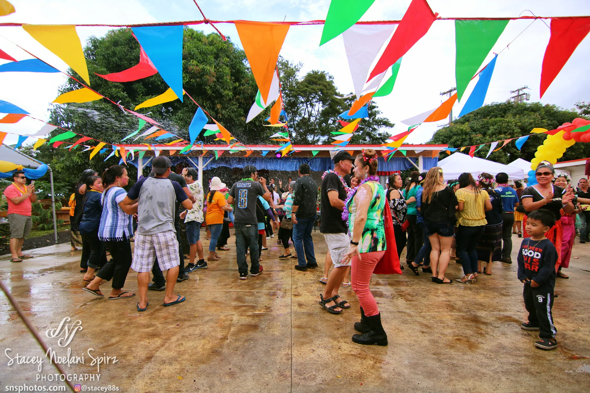

← All galleries
Events & Action
From community gatherings and performance to sports and motion, life rarely stands still.
11 selected photographs
← Back to portfolio
Colorful moments1 / 11
© Stacey Noelani Spirz · For viewing only. Want to use a photograph or order a print? Please contact me.
Swipe the photographs sideways or use the arrows. Tap the large image to see it full screen.
Keep exploring